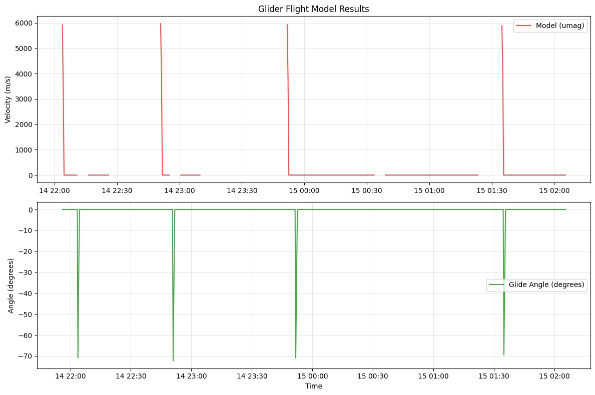

Demo
The purpose of this notebook is to demonstrate the functionality of gliderflightOG1.
The demo is organised to show
Step 1: Regressing the Seaglider steady flight model for chosen parameters
Step 2: Recalculating the glider flight using the flight model and chosen parameters
[1]:
import xarray as xr
from gliderflightOG1 import plotters, tools
import numpy as np
from gliderflightOG1 import seaglider # Assuming correct project style
[2]:
# 1. Load your dataset
glider = xr.open_dataset('../data/sg014_20080214T220104_delayed.nc')
glider = tools.calc_w_meas(glider)
# 2. Rename and clean up fields as needed
glider = glider.rename({
'VBD_CC': 'VBD',
'divenum': 'DIVENUM',
})
[3]:
# 3. Add missing variables
# a) Create UPDN from PITCH
glider = glider.assign_coords(TIME=glider['TIME']) # Make sure TIME is coordinate
glider['UPDN'] = xr.where(glider['PITCH'] > 0, 1, -1)
# b) Create VERTICAL_SPEED from dP/dt
# Assume TIME is in seconds or known units
# c) Create fake C_VBD
glider['C_VBD'] = xr.zeros_like(glider['VBD'])
[4]:
# d) Add starter attributes
glider.attrs.update({
'hd_a': 0.0036, # starting guess
'hd_b': 0.0098, # starting guess
'hd_c': 0.0010, # starting guess
'vbdbias': 0.0, # start assuming no bias
'abs_compress': 4e-6, # reasonable guess
'therm_expan': 2e-5, # reasonable guess
'rho0': 1025.0, # typical seawater density
'vbd_min_cnts': 0.0,
'vbd_cnts_per_cc': 1.0,
'temp_ref': 10.0,
'volmax': 0.0,
'mass': 52.0, # Approx mass of glider [kg]
})
# 4. Subselect a few dives to test
dives_to_use = glider['DIVENUM'].values
ensmat = dives_to_use[:20] # first 20 dives for testing
[5]:
glider
[5]:
<xarray.Dataset> Size: 17MB
Dimensions: (N_MEASUREMENTS: 54404)
Coordinates:
LONGITUDE (N_MEASUREMENTS) float64 435kB ...
LATITUDE (N_MEASUREMENTS) float64 435kB ...
TIME (N_MEASUREMENTS) datetime64[ns] 435kB ...
DEPTH (N_MEASUREMENTS) float64 435kB ...
Dimensions without coordinates: N_MEASUREMENTS
Data variables: (12/59)
TEMP_RAW_QC (N_MEASUREMENTS) float32 218kB ...
TEMP_QC (N_MEASUREMENTS) float32 218kB ...
GLIDE_SPEED_QC (N_MEASUREMENTS) float32 218kB ...
TIME_DOXY (N_MEASUREMENTS) datetime64[ns] 435kB ...
DOXY_QC (N_MEASUREMENTS) float32 218kB ...
PSAL_RAW_QC (N_MEASUREMENTS) float32 218kB ...
... ...
SENSOR_CTD_0019, (N_MEASUREMENTS) float64 435kB ...
SENSOR_DISSOLVED_GAS_SENSORS_UNKNOWN (N_MEASUREMENTS) float64 435kB ...
PLATFORM_SERIAL_NUMBER <U5 20B ...
GLIDER_VERT_VELO_DZDT (N_MEASUREMENTS) float64 435kB nan ...
UPDN (N_MEASUREMENTS) int64 435kB -1 ... -1
C_VBD (N_MEASUREMENTS) float32 218kB 0.0 ...
Attributes: (12/52)
title: OceanGliders trajectory file
id: sg014_20080214T220104_delayed
platform: sub-surface gliders
platform_vocabulary: https://vocab.nerc.ac.uk/coll...
naming_authority: edu.washington.apl
institution: School of Oceanography\nUnive...
... ...
rho0: 1025.0
vbd_min_cnts: 0.0
vbd_cnts_per_cc: 1.0
temp_ref: 10.0
volmax: 0.0
mass: 52.0[6]:
# 5. Which parameters to optimize
whichpar = [1, 1, 1, 0, 0, 0] # solve for hd_a, hd_b, vbdbias
# 6. Run the regression
regressout, allwrms = seaglider.regress_all_vec(
whichpar=whichpar,
glider=glider,
whichone=10, # Ramsey's method
ensmat=ensmat,
plotflag=False,
unstdyflag=0,
)
def renormalize_params(params, factors, direction='normalize'):
"""Renormalize parameters with given factors.
Parameters
----------
params : np.ndarray
The parameters to transform. Expected order is
[hd_a, hd_b, vbdbias, abs_compress, therm_expan, hd_c].
factors : list or np.ndarray
The factors for renormalization.
direction : str, optional
'normalize' to divide by factors, 'denormalize' to multiply by factors.
Default is 'normalize'.
Returns
-------
np.ndarray
Transformed parameters.
Raises
------
ValueError
If the direction is not 'normalize' or 'denormalize'.
"""
if direction == 'normalize':
return params * factors
elif direction == 'denormalize':
return params / factors
else:
raise ValueError("Direction must be 'normalize' or 'denormalize'.")
# Define renormalization factors
factors = np.array([1e3, 1e3, 1, 1e6, 1e5, 1e5])
# Create a vector of params from regressout with the same size as factors
params = np.zeros_like(factors)
params[np.array(whichpar, dtype=bool)] = regressout
# Renormalize regressout
#regressout_normalized = renormalize_params(regressout, factors, direction='normalize')
regressout_norm = renormalize_params(params, factors, direction='denormalize')
print("Optimized parameters:", regressout_norm)
print("Final WRMS:", allwrms)
🚁 Starting Glider Flight Model Parameter Optimization
============================================================
Iter 0: WRMS=1312060.680540, hd_a=0.0036, hd_b=0.0098, vbdbias=0
Iter 1: WRMS=1312838.400381, hd_a=0.00378, hd_b=0.0098, vbdbias=0
Iter 2: WRMS=1228890.233972, hd_a=0.0036, hd_b=0.01029, vbdbias=0
Iter 3: WRMS=1312060.689131, hd_a=0.0036, hd_b=0.0098, vbdbias=0.00025
Iter 4: WRMS=1254510.987897, hd_a=0.00342, hd_b=0.01013, vbdbias=0.0001667
Iter 10: WRMS=991196.761310, hd_a=0.00312, hd_b=0.01203, vbdbias=-0.0006667
Iter 20: WRMS=0.028283, hd_a=0.0009533, hd_b=0.02217, vbdbias=-0.003235
Iter 30: WRMS=0.028283, hd_a=0.001408, hd_b=0.01983, vbdbias=-0.002767
Iter 40: WRMS=0.028283, hd_a=0.001522, hd_b=0.01925, vbdbias=-0.00265
Optimization terminated successfully.
Current function value: 0.028283
Iterations: 17
Function evaluations: 46
============================================================
🎯 Optimization Complete!
============================================================
📊 Optimization Progress (46 iterations):
------------------------------------------------------------
Iter WRMS hd_a hd_b vbdbias abs_compress therm_expan hd_c
0 1.312e+06 0.0036 0.0098 0 4e-06 2e-05 0.001
1 1.313e+06 0.00378 0.0098 0 4e-06 2e-05 0.001
2 1.229e+06 0.0036 0.01029 0 4e-06 2e-05 0.001
16* 0.02828 0.00156 0.01906 -0.002611 4e-06 2e-05 0.001
43 0.02828 0.001561 0.01906 -0.002593 4e-06 2e-05 0.001
44 0.02828 0.001556 0.01911 -0.002618 4e-06 2e-05 0.001
45 0.02828 0.001541 0.01915 -0.002631 4e-06 2e-05 0.001
⭐ Best WRMS: 0.028283 (iteration 16)
🏁 Final Result:
WRMS: 0.028283
Converged: ✅ Yes
Function evaluations: 46
Optimized parameters: [ 0.00156 0.01905556 -0.00261111 0. 0. 0. ]
Final WRMS: 0.02828261653548487
/home/runner/work/gliderflightOG1/gliderflightOG1/gliderflightOG1/seaglider.py:235: FutureWarning: Setting an item of incompatible dtype is deprecated and will raise an error in a future version of pandas. Value '16*' has dtype incompatible with int64, please explicitly cast to a compatible dtype first.
display_df.loc[best_idx, "Iter"] = f"{best_idx}*" # Mark best
[7]:
regressout_norm
[7]:
array([ 0.00156 , 0.01905556, -0.00261111, 0. , 0. ,
0. ])
[8]:
# 7. Apply optimized parameters and run flight model
# Update glider attributes with optimized parameters
glider.attrs.update({
# 'hd_a': regressout_norm[0],
# 'hd_b': regressout_norm[1],
'vbdbias': regressout_norm[2],
# Keep other parameters as they were
})
# Run flight model with optimized parameters
try:
# Calculate flight velocities using the optimized parameters
glider_with_model = seaglider.flightvec_ds(
glider,
xl=1.0, # typical glider length in meters
hd_a=glider.attrs['hd_a'],
hd_b=glider.attrs['hd_b'],
hd_c=glider.attrs['hd_c']
)
print("Flight model calculation completed successfully!")
print(f"Added variables: {list(set(glider_with_model.data_vars) - set(glider.data_vars))}")
# Simple plot showing model results
import matplotlib.pyplot as plt
# Plot a subset of the data for visualization
time_subset = slice(0, 500) # First 500 data points
fig, (ax1, ax2) = plt.subplots(2, 1, figsize=(12, 8))
# Plot vertical velocities
if 'VERTICAL_SPEED' in glider_with_model:
ax1.plot(glider_with_model['TIME'][time_subset],
glider_with_model['VERTICAL_SPEED'][time_subset],
'b-', label='Observed', alpha=0.7)
if 'umag' in glider_with_model:
ax1.plot(glider_with_model['TIME'][time_subset],
glider_with_model['umag'][time_subset],
'r-', label='Model (umag)', alpha=0.7)
ax1.set_ylabel('Velocity (m/s)')
ax1.set_title('Glider Flight Model Results')
ax1.legend()
ax1.grid(True, alpha=0.3)
# Plot glide angle if available
if 'thdeg' in glider_with_model:
ax2.plot(glider_with_model['TIME'][time_subset],
glider_with_model['thdeg'][time_subset],
'g-', label='Glide Angle (degrees)', alpha=0.7)
ax2.set_ylabel('Angle (degrees)')
ax2.legend()
ax2.grid(True, alpha=0.3)
ax2.set_xlabel('Time')
plt.tight_layout()
plt.show()
except Exception as e:
print(f"Error running flight model: {e}")
print("This may be due to missing variables or incompatible data format.")
print("Check that all required variables are present in the dataset.")
Flight model calculation completed successfully!
Added variables: ['umag', 'thdeg']
